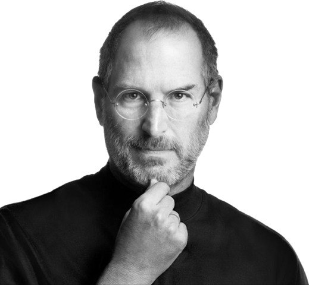

“Don’t let the noise of others’ opinions drown out your own inner voice.” ~ Steve Jobs
I chose Steve Jobs because he is a productive and intelligent person in doing things, such as developing a company called Apple and producing technology such as phones with sales that sold well until today.